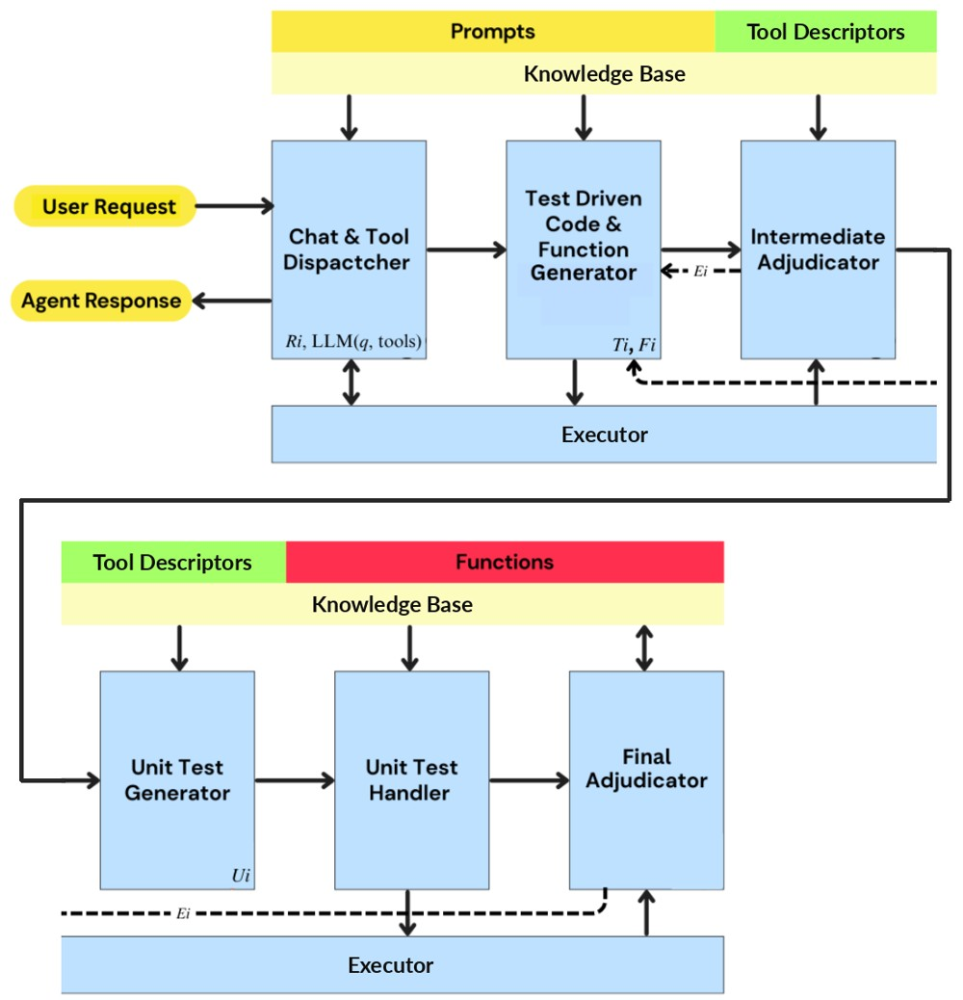
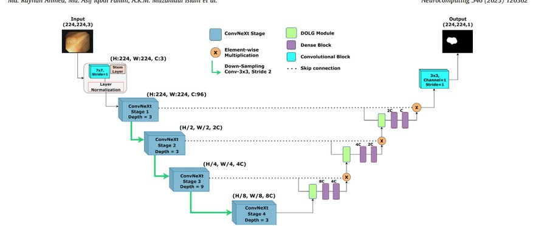

Fahim
Dublin · Ireland
I research agentic systems that generate, test and integrate new functionality into running software, and the safety questions that come with them.
PhD Researcher · Lead AI Engineer
Click a planet to explore
I build software that evolves itself.
ScrollI research agentic systems that generate, test and integrate new functionality into running software, and the safety questions that come with them.
Two first-author papers in my first year: ReqEvolve at ASE 2026 (CORE A*) and SelfEvolve at SEAMS 2026 (CORE A). Outstanding Poster Award, 2026.
Six years shipping AI. Now at InfinitiBit, building agentic RAG, LLM evaluation and forecasting systems for Siemens Energy and Grant Thornton.
Five Kaggle medals, including silver in OpenAI's AI Agent Security challenge. Champion of NASA Space Apps 2020.
When is it safe to integrate generated code into a running system? How do you reverse a faulty integration, keep generated capabilities isolated per user, and trust the LLM judges that evaluate agent output? My work sits where software engineering meets AI agent security and oversight.
Lets end users, not just developers, drive software self-evolution. High-level requests are clarified, decomposed into specifications, turned into tests and integrated into the running system. Reaches 89.2% Pass@1 on 72 evolution cases across 18 projects, beating SpecFix by 18.8%.
Read the paper ↗
Goes beyond self-adaptation: an orchestrated pipeline that generates entirely new modules at runtime through automatic test-driven development. 92.7% Pass@1 (51/55) across 11 integration, compositional and data-processing problems, a 61.8% improvement over AutoGen.
Read the paper ↗
A ConvNeXt-based encoder–decoder that fuses local and global features with DOLG modules for biomedical image segmentation. Funded by the Institute of Advanced Research, UIU.
Read the paper ↗
EfficientNet with semi-supervised Noisy Student training and a Mish-activated classifier, separating COVID-19, pneumonia and normal chest X-rays with 98% ROC-AUC, plus saliency maps for interpretability.
Read the paper ↗
In OpenAI's Kaggle challenge AI Agent Security: Multi-Step Tool Attacks, attacks had to push two tool-using agents (gpt-oss-20b, gemma-4-26B) into misusing their tools behind a hidden guardrail.
I reconstructed that guardrail locally, predicted that exfiltration attacks would be nullified on the private leaderboard, and chose a taint-free confused-deputy attack that survived it.
From production LLM systems to hackathon apps and hardware. Filter by area, or open the full list.
Production RAG over PDFs with text, tables and images on ChromaDB. Redis semantic caching cut OpenAI API costs by 60%; deployed with Terraform on AWS.
Agent workflows for grid optimisation and predictive maintenance, with causal-reasoning time-series models for renewable-energy forecasting.
WhisperX streaming over WebSocket with voice activity detection and phoneme alignment. Containerised FastAPI service with sub-200 ms latency.
Context-aware recommender on OpenSearch with HNSW indexing. ONNX-optimised Sentence-BERT gave a 5× latency reduction in production.
BERTopic with incremental training via IncrementalPCA and MiniBatchKMeans, served through Celery workers handling 10K+ requests a minute.
Dynamic training for a 900-hour speech dataset with automated GPU scheduling. JAX pipeline with pruning cut training time by 40%.
GitHub Actions for automated model testing, validation and versioning, with AWS CodePipeline deployments supporting rollback and A/B tests.
Speech recognition for out-of-distribution Bengali audio with production-ready data pipelines. Silver medal.
A Telegram chatbot built to support people with depression, using Google Dialogflow for conversation and hosted on Heroku.
Classifies dogs, cats, horses and humans from a Kaggle dataset with a Support Vector Machine.
Linear regression on profit and population data to forecast a company’s future profit.
SVM on gender, age and salary to predict car-purchase groups, with preprocessing, feature scaling and confusion-matrix analysis.
Camera app that continuously detects objects with a quantised MobileNet SSD trained on COCO, running on-device.
Face-beautify camera with traditional Bengali stickers, timers and camera switching, built with OpenCV and OpenGL.
Shows surface air quality from IoT sensor data through a REST API and compares it with NASA data. Top-40 team.
A playful augmented-reality app that places a 3D fox anywhere in the scene.
An app sharing the history of the Bangladesh Liberation War.
COVID-19 information for Bangladesh in one place.
All of Bangladesh’s online newspapers in a single app.
Interactive map visualising nearby natural events. Champion in Bangladesh and Global Nominee.
Web dashboard for surface air-quality readings from the team’s IoT devices, analysed against NASA data.
E-commerce site with separate admin and user panels.
A browser snake game built with the Phaser engine.
NodeMCU firmware that detects harmful gases and streams readings to the web and Android apps.
Waterproof DS18B20 sensor with RGB LED and buzzer to tell whether milk is too hot or too cold for a baby.
Full-time from Dec 2024; part-time alongside the PhD since Sep 2025.
Earlier: Junior Research Assistant, Consortium Research Center · Data Scientist (contract), Dentalfynd, USA · NLP Specialisation Mentor & Alpha Tester, DeepLearning.AI.
University College Dublin · Outstanding Poster Award 2026
Green University of Bangladesh · CGPA 3.57, 2nd in batch, Dean's Award ×2